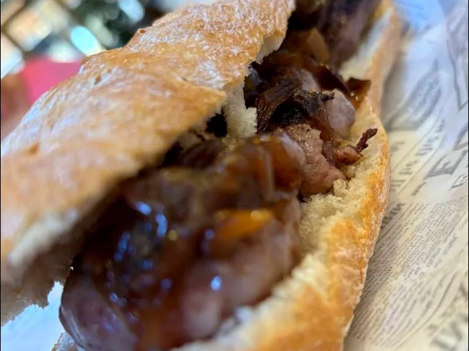
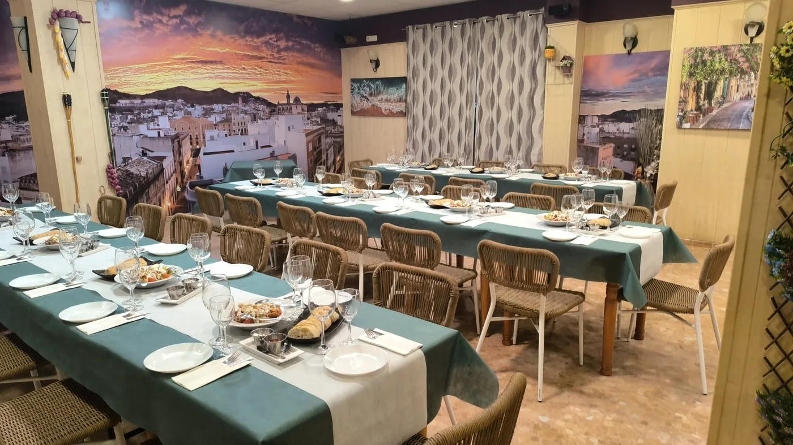
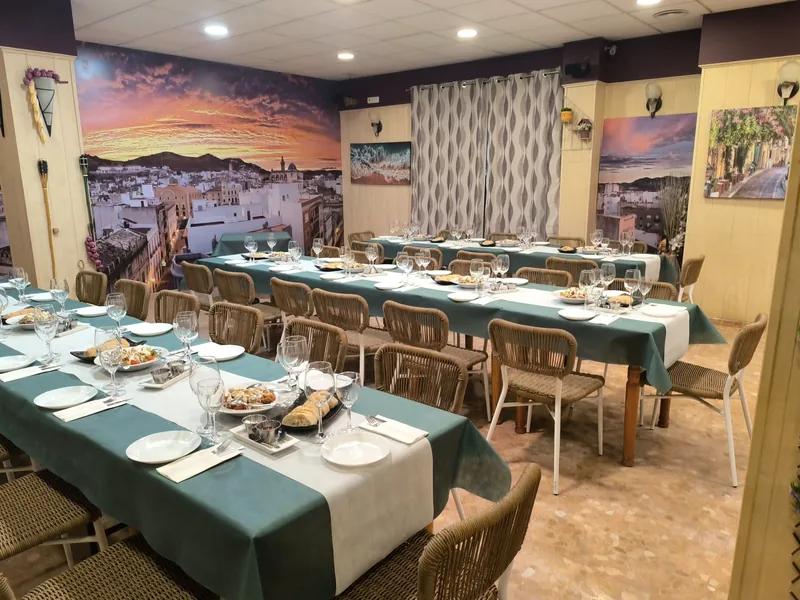
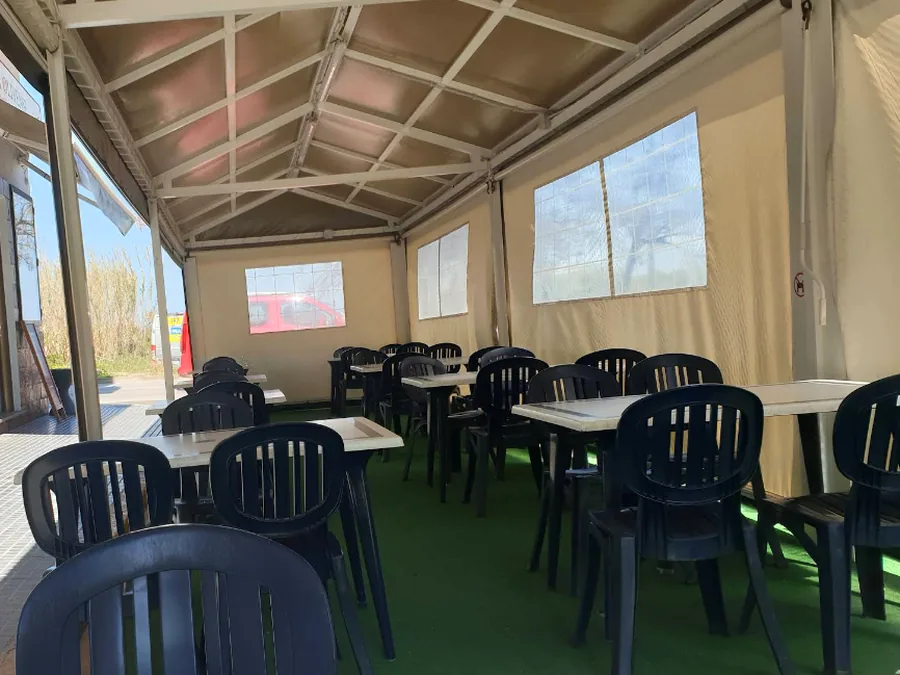

Arroces, brasa
y terraza
Cocina mediterránea casera, hecha al momento, en el centro de Oliva.
4,2 en Google, 1.191 reseñasDe martes a domingo, desde las 8:00Terraza y grupos
Arroz , brasa y huerta
y huerta
Carta de más de 100 platos. Menú del día y arroces por encargo.
Lo que sale de la cocina
Precios de la carta de la casa. Arroces y fideuás por encargo.


Una tasca de barrio, con mesa para todos
Cocinamos platos caseros desde hace años en el centro de Oliva.
Producto fresco y recetas de siempre: tapas, menú del día, arroces por encargo y carnes a la brasa. Comedor para grupos y terraza para los días largos.
- CocinaMediterránea casera
- EspecialidadArroces y brasa
- MediodíaMenú del día
- TerrazaSí, admite perros
- Grupos y niñosMenús y tronas
- Precio medio10 a 20 € por persona

La casa, por dentro
Comedor amplio para celebraciones, terraza cubierta todo el año y platos que salen como salen de casa: sin prisa.


El comedor
Lo que se dice en la mesa de al lado
El menú tiene una relación calidad-precio estupenda. El trato fue excelente y en la terraza sacaron un cuenco de agua a nuestra perrita.
Carlos, Google (hace 4 meses)
De primero un «escombro» buenísimo, y luego unas burguer XXL brutalmente buenas. Volveremos a probar su extensa carta.
Ali Cia, Google (hace un año)
Comimos a la carta y buenísimo todo: el churrasco, el codillo y las costillas. Los camareros, estupendos.
Vicente Hernández, Google (hace 2 meses)
Dónde estamos
En el centro de Oliva, con aparcamiento libre en la calle y en el entorno.
Carrer de Beatriu de Centelles, 5. 46780 Oliva (Valencia). Mapa © OpenStreetMap.
Horario
LunesCerrado
Martes8:00 a 23:30
Miércoles8:00 a 23:30
Jueves8:00 a 23:30
Viernes8:00 a 00:00
Sábado8:00 a 00:00
Domingo8:00 a 00:00
Contacto
962 855 633
Reservas por teléfono, también para grupos.
Cómo llegar
Abrir la ruta en Google Maps
Terraza accesible, tronas y menú infantil.
Reservar mesa
Llámanos y te la guardamos. Para grupos, avisa con tiempo y preparamos el menú.
Teléfono de reservas962 855 633
Martes a jueves, 8:00 a 23:30
Viernes a domingo, 8:00 a 00:00
Lunes cerrado